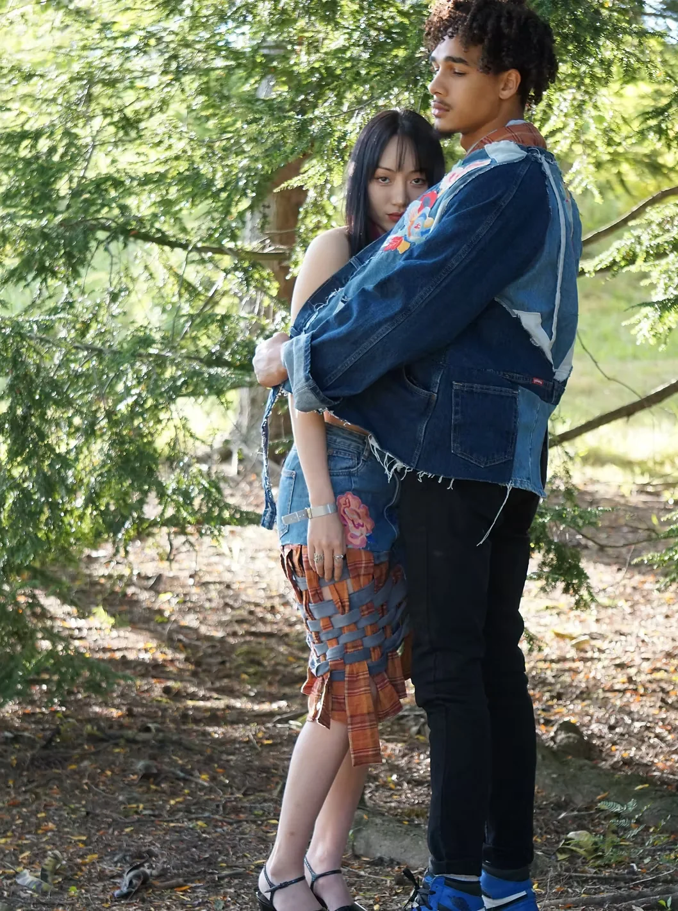
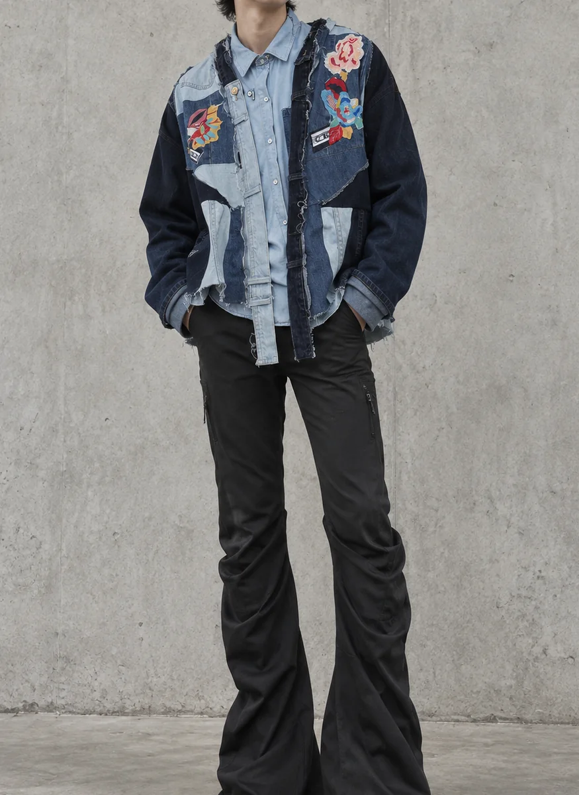
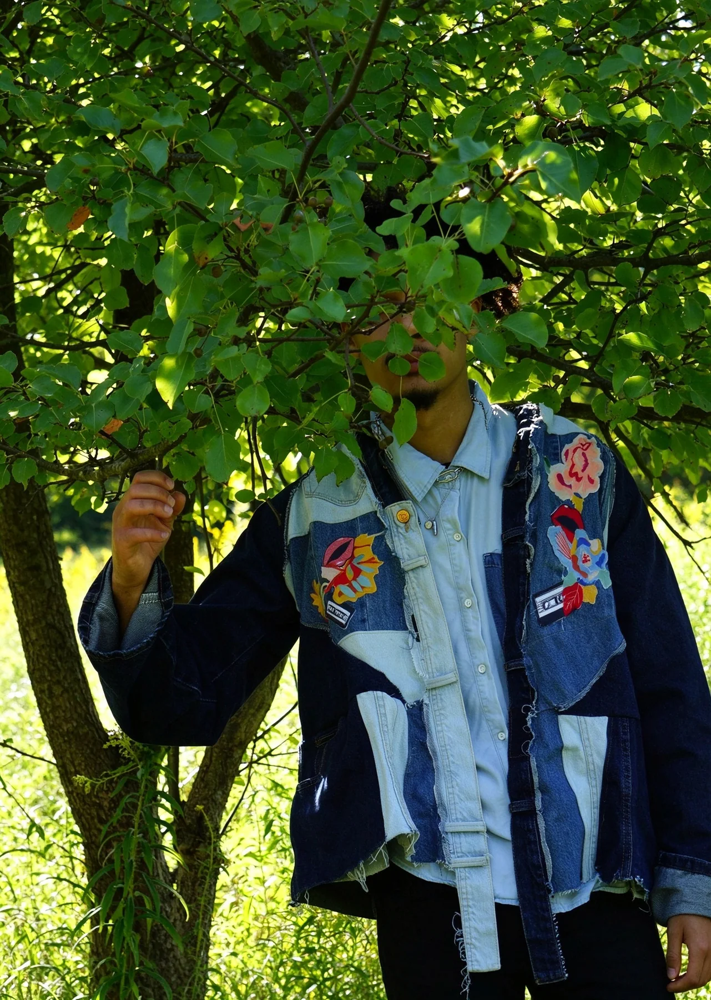
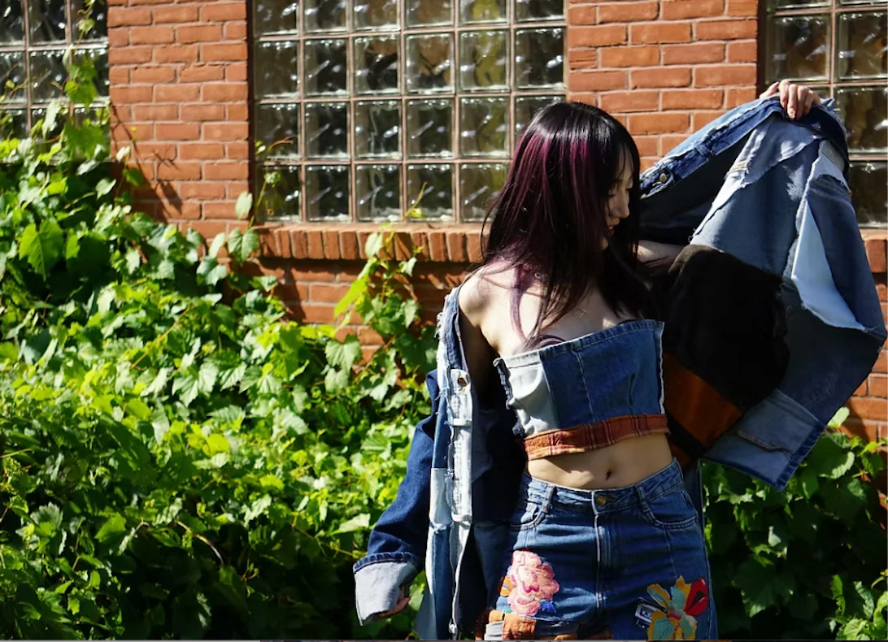

FASHION / GARMENT CONSTRUCTION
Zero-Waste Denim
I first conceived the project in 2020 while working on a school assignment, exploring how existing garments could be reconstructed for movement and warmth.



-
Material Circularity & Zero-Waste Patterning
100% post-consumer and surplus materials (2 pairs of jeans, remnant denim, 1 linen skirt, 1 thermal legging). Near-total structural integration of a full pair of men’s jeans—removing only non-fabric hardware (zipper)—to achieve near-zero cutting waste.
-
Hybrid Textile Engineering for Mobility
Horizontal stretch-jersey gusset engineered into a rigid woven linen skirt, expanding range of motion and reframing womenswear around physical autonomy rather than restriction.
-
Functional Upcycling & Thermal Architecture
Upcycled thermal legging repurposed as a tailored interior lining, giving discarded activewear a second lifecycle as high-utility cold-weather insulation.

Collection overview

Technical study

Jacket construction